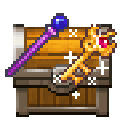

我的项目 “Java-RPG-Maker-MV-Decrypter” 发布了一个 Alpha版本 , 它可以处理整个目录并自行保存/重命名文件...
它拥有 GUI ，你可以去尝试一下。 如果你只想解密文件， 我推荐你使用这个版本 (因此你不需要下载)。 但对于整个目录，您应该尝试 Java 版本！=)

欢迎使用 RPG-Maker MV & MZ-File Decrypter ，您可以轻松地解密 使用内置加密技术加密 的 任何 RPG-MV/RPG-MZ项目 的文件。 同时，您也可以重新加密它们~ （主要用于翻译游戏内容）
请确保您不会使用此工具来窃取内容, 如果你需要查看图像（大多数法律是允许私人使用的），请随意查看，但不要窃取它们！
内容由 禾守 汉化~
Tips：若您需要将 加密的图像文件（一般为 .rpgmvp & .png_ 格式）转换为 .png 格式，则不需要进行解密操作，除非您需要重新加密它们。 点我前往转换(没有密钥的)图像
在这里， 您可以 解密&(重新)加密 RPG-Maker MV & MZ 游戏文件
您可以从以下文件中获取密钥：
选择文件后点击“检测”。如果您知道密钥，可直接在下方的输入框中输入！
在这里，您可以直接将 RPG-Maker游戏 中 加密的图像文件（一般为 .rpgmvp & .png_ 格式） 转换为 .png 格式，无需密钥
（Tips：部分游戏可能需要密钥！点我前往转换需要密钥的图像）
请注意：此脚本仅在 Firefox 上测试和开发。您可以通过 报告错误 帮助我使其在所有浏览器上运行！